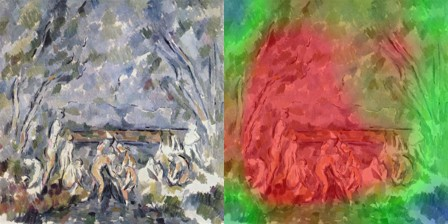
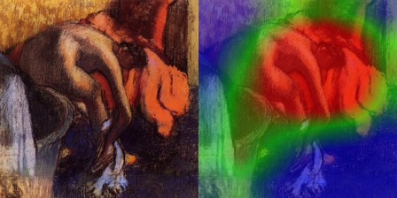
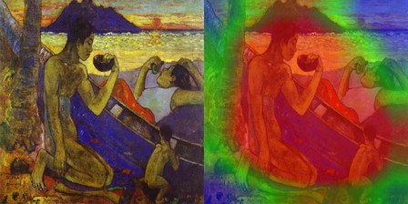
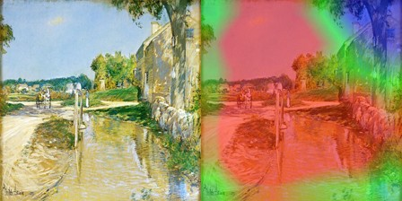
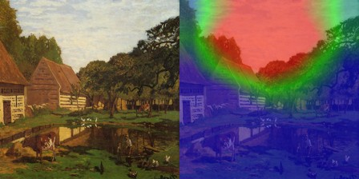
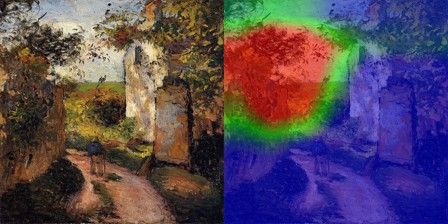
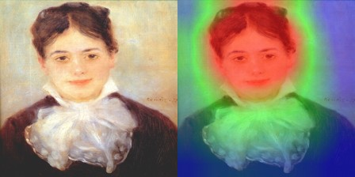
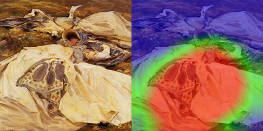
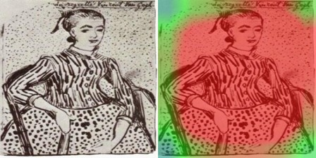

同济大学机器学习课程设计成果报告
我采用 Kaggle 的印象派绘画数据集，共包含 10 个代表性流派画家的艺术作品：
传统卷积神经网络在加深层数时会遇到梯度消失或爆炸问题，导致模型性能退化。印象派画作的分类极度依赖于底层的“笔触纹理特征”与高层的“色彩光影构图”，这要求网络具有一定的深度。
我自建的 ImpressionistResNet 引入了跳跃连接 (Shortcut Connection)，使输入可以直接跨越两层卷积传递：
当网络退化时，优化器更容易学习到残差映射 \( F(x) = 0 \)，从而保证了深层网络至少不会弱于浅层网络，实现了平滑梯度流动与参数学习。
为体现算法细节的掌控度，我没有借用任何 torchvision 的预训练结构，而是基于 PyTorch 实现了底层算法：
AdamW 优化器与权重衰减机制，抑制模型对有限画作的过拟合，并引入 CosineAnnealingLR 动态调整学习率。# 核心残差块与Skip Connection实现
class ResidualBlock(nn.Module):
def __init__(self, in_channels, out_channels, stride=1, downsample=None):
super(ResidualBlock, self).__init__()
self.conv1 = nn.Conv2d(in_channels, out_channels, kernel_size=3, stride=stride, padding=1, bias=False)
self.bn1 = nn.BatchNorm2d(out_channels)
self.relu = nn.ReLU(inplace=True)
self.conv2 = nn.Conv2d(out_channels, out_channels, kernel_size=3, stride=1, padding=1, bias=False)
self.bn2 = nn.BatchNorm2d(out_channels)
self.downsample = downsample
def forward(self, x):
residual = x
out = self.conv1(x)
out = self.bn1(out)
out = self.relu(out)
out = self.conv2(out)
out = self.bn2(out)
if self.downsample is not None:
residual = self.downsample(x)
out += residual
return self.relu(out)通过使用 15 个 Epoch 的余弦退火训练，网络展现出了稳定的收敛态势：
混淆矩阵是反映分类器微观行为的一面镜子。通过分析我可以得到如下符合美术史学规律的“艺术风格关联”：
为了探寻模型是如何区分不同画家的，我使用了 Grad-CAM 模型。它将模型最后的残差块对图像分类的贡献梯度作为权重对特征图进行加权融合：
以下为 10 位画家的验证集画作对比图（每张图左侧为原画，右侧为热力图覆盖。红色代表模型在分类决策时最关注的‘视觉指纹’区域）：

模型关注点锁定在其画面独创的“色块几何体结构”（如静物的几何边缘与形体交线），符合塞尚将自然还原为几何形体的立体主义尝试。

注意力热力图聚焦于芭蕾舞女裙摆的高光边缘以及强对比处的轮廓，这正是德加捕捉舞台瞬时动态与光影的精髓所在。

模型倾向于捕捉画面里的“平涂大色块”与粗犷的强色调对比，切合了高更塔希提时期原始主义扁平化的面感特色。

激活焦点主要分布在街道或波光粼粼的水面光斑上，体现出美国印象派对于斑驳、跳跃的细碎日光笔触的捕捉。
模型高度集中于饱和纯色的撞色块面（如大红大绿）和野性的黑色边框勾勒线上，对形体细节做出了高度抽象简化。

注意力热力图锁定了水池倒影里的闪烁色块以及睡莲的边缘光彩，说明模型捕捉到了莫奈经典的“光影斑驳色彩瞬间组合”笔触。

模型关注点均匀散布在碎叶、林荫路面细小的颜色震荡和密集的颗粒描点上，证实了模型能提取出毕沙罗厚实密布的田园碎笔特征。

焦点落在人物白皙丰润的脸颊和衣物边缘的暖色反光晕染带中，完美切合了雷诺阿偏爱柔焦人像与温暖偏红笔触的特点。

红区聚焦于礼服丝绸闪耀的高亮反光和面部潇洒洗练的笔锋阴影上，表明模型抓取了萨金特高度精准的造型与强对比控制力。

关注焦点呈现出明显的带状漩涡分布，精确契合天空云彩和向日葵中旋转厚涂的笔触线条，成功捕捉了梵高标志性的螺旋指纹。
在这项基于印象派绘画分类器的实践中，我最大的收获是对“算法可解释性”与“深度残差连接”的底层代码掌控。
通过从零搭建 CNN 并且训练，我深刻领会到数据增强对于小样本数据集的生死重要性。如果不使用随机缩放与翻转，模型在第5个epoch之后就会陷入严重的过拟合。
使用 Grad-CAM 的过程促使我查看公式，去真正理解卷积层中“通道”（Channels）其实对应于“不同的纹理提取器”。看到热力图精确落在梵高的旋涡云彩和莫奈的水中浮莲上时，我感受到了“数学的浪漫与人工智能的理性”。
这次重构过程让我进一步领略到参数调优和工程细节的含金量。将原本暗黑的界面迭代为明亮艺术的浅米色暖砂风格，融合了视觉传达设计的网格理性与机器学习特征的可视化直觉。通过去除无用依赖与逻辑控制模块，使系统更加纯粹、专注于对学术研究成果的艺术呈现。